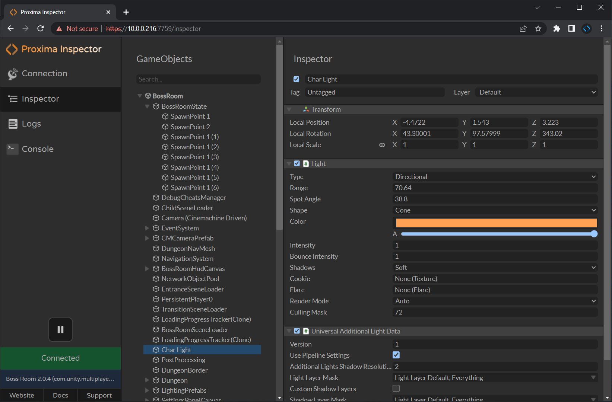
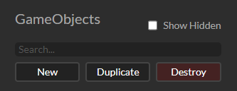

GameObject Inspector
Basic Usage
The GameObject Inspector lets you view and edit any gameObject and component in your scene, just like the Unity inspector.
The left side displays the gameObject hierarchy. Select a gameObject to view its properties and components in the inspector on the right side.
Reordering and Reparenting GameObjects
You can reorder or reparent gameObjects by dragging them in the hierarchy.
Finding GameObjects
You can search for a gameObject by name in the Search Box.
Showing Hidden GameObjects and Components
GameObjects and Components which are hidden with hideFlags can be made visible in Proxima by clicking the Show Hidden toggle.
Creating New GameObjects
You can create an empty gameObject and its children by pressing the "New" button.
Duplicating GameObjects
You can duplicate a gameObject and its children by pressing the "Duplicate" button or Ctrl-D key while the gameObject is selected.
Destroying GameObjects
You can destroy a gameObject and its children by pressing the "Destroy" button or the delete key while the gameObject is selected.
Changing Properties
Change a property value by entering a value or dragging left-right on its name.
Destroying Components
You can destroy a component the "Destroy" button next to the component name.
Adding Components
You can add a component by typing its class name without spaces in the input field at the bottom of the inspector.
© 2023 Virtual Maker Corporation